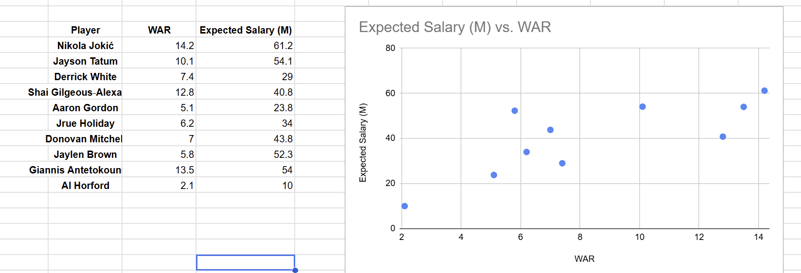

Not much to say about me right now.

Brown is on the wrong side of the salary-value curve for the Celtics. I don't understand all the exact details of the aprons, but I'm guessing they felt they had to move salary and he was a good person to move. If it were a business, he'd be a high paid VP getting fired vs a lot of cheaper analysts.
He can certainly score a lot and get a decent shot anytime he wants to. But so can Tatum and maybe most of his shot attempts can be divided up amongst the rest of the team without losing much impact. It's surprising to me that he went to Philadelphia. They already have Embiid, who needs the ball, and Maxey, who should have the ball more. You'd think there would have been another team who needed a guy who can always get a shot. That contract really must be an albatross for him.
I don't see this trade happening in prior years before the rise of the 3.
I think there's some value in Paul George and his expiring contract in the future, but this seems like a lateral move to avoid the tax penalties. And if my argument (and maybe Brad Stevens?) about dividing up his average shot attempts amongst the rest of the team is right, then they aren't taking a step back from title contention. It reminds me of the Moneyball arguments in baseball years ago. The A's weren't trying to replace Giambi, they were trying to replace him in aggregate in the context of the team.
I need to load some of the related images I made for this too.
This is a link back to the homepage